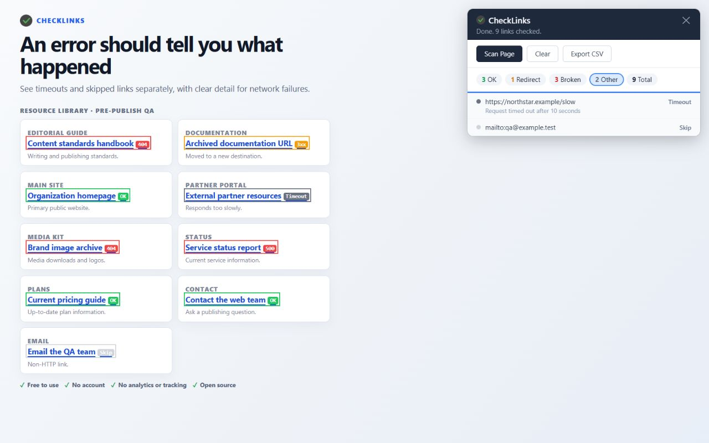

Quick fixes
The panel did not appear
- Confirm you are on a normal
http://orhttps://webpage. - Reload the page and click the CheckLinks toolbar icon again.
- If Chrome recently updated the extension, reload any tab that was already open.
A link is marked timeout or error
- Open the destination normally in a new tab.
- Retry the scan in case the failure was temporary.
- Check whether the destination requires a login, VPN, or bot challenge.
How to interpret an ambiguous result

A status is an observation, not a verdict. A 404 or 500 response is strong evidence of a problem. A timeout, blocked response, or network error needs context because the destination may answer differently to a normal click or an authenticated user.
Known limitations
- One open page at a time. CheckLinks checks links already present on the current page. It does not crawl an entire website, follow internal links to discover more pages, or run scheduled monitoring.
- Restricted browser pages. Chrome does not allow extensions to inject into browser-controlled pages such as
chrome://URLs. The Chrome Web Store and some other protected surfaces may also restrict extension behavior. - No login cookies in link-check requests. CheckLinks omits credentials when it checks a URL. A private or session-dependent destination may therefore return a login page, redirect, 401, 403, or blocked result even though it works after a normal signed-in click.
- Sites can block automated checks. Rate limits, bot protection, firewalls, VPN rules, CORS or browser policies, DNS problems, and SSL errors can produce a blocked, network-error, or timeout result.
- Ten-second timeout. A very slow destination can time out even if it eventually loads. Scans are throttled to be respectful, so pages with many unique links take longer.
- Skipped link types. Pure fragment links and non-web schemes such as
mailto:,tel:,javascript:, anddata:are skipped rather than fetched. - Dynamic pages need a rescan. Links added after a scan starts are not part of that run. Let the page finish loading, then scan again.
- HTTP status is not content QA. A 2xx response does not prove the destination is the right page, that its content is current, that a form works, or that the page is accessible or indexable.
- Results are not a permanent workspace. Export the CSV before closing or navigating away if you need a handoff or record of the scan.
Permissions and privacy
CheckLinks uses activeTab and scripting access when you click its toolbar icon, plus host permissions so its background worker can request linked URLs. It has no account, analytics, or tracking, and does not send scan results to a developer-operated service.
Read the full CheckLinks privacy policy or inspect the open-source code.
Report a problem
If the steps above do not resolve it, open a GitHub issue with:
- your Chrome and CheckLinks versions;
- the result category and exact status text;
- steps that reproduce the problem; and
- a public example URL when possible.
Do not post private, signed-in, client, or staging URLs in a public issue. A redacted screenshot is often enough.
Support from the developer
I’m Mark Lee, the solo developer maintaining CheckLinks as a free, open-source project. Clear reproduction steps make it much easier for me to help.